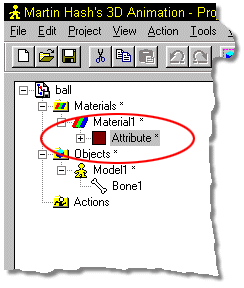
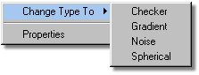

There are several different types of materials which fall under a few
different classes. Understanding these classes will help you use materials effectively.
There are several different types of materials which fall under a few
different classes. Understanding these classes will help you use materials effectively.

To change between types of materials, right click the attribute you wish to change the type for (in this case,
“Attribute”), then select “Change Type To” on the menu that appears. The following pop up will appear, allowing you to select which combiner type you wish to work with.

Environment maps (maps that simulate a reflected environment) can also be applied from the Material type menu.
Tell Me About:
About Materials
Attributes
Combiners
Turbulence